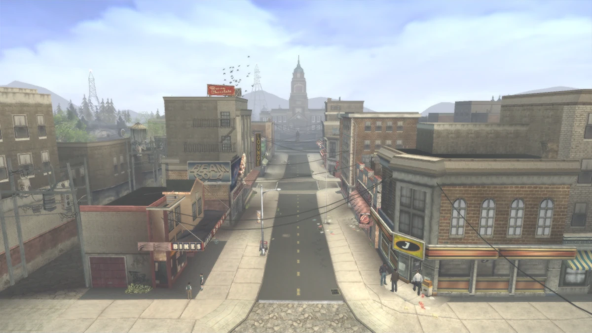

Ciudad de Bullworth
Un pintoresco pueblo de Nueva Inglaterra, famoso por su prestigiosa academia y su particular vida urbana.
Historia de Bullworth
Bullworth es una pintoresca ciudad situada en la región de Nueva Inglaterra. Su crecimiento e identidad han estado históricamente vinculados a la famosa Academia Bullworth, una institución educativa privada fundada en el siglo XIX.
Con el transcurso de los años, el pueblo se expandió desde un pequeño asentamiento industrial hasta convertirse en una comunidad diversa con zonas residenciales, un centro comercial activo y un parque de atracciones costero.
Actualmente, Bullworth es conocida por el constante contraste entre la vida idílica de sus ciudadanos y las frecuentes disputas territoriales entre los estudiantes y las distintas subculturas urbanas.

Identidad de la ciudad
Bullworth destaca por su estilo clásico y tradicional. Sus calles combinan la arquitectura colonial de ladrillo rojo con el dinamismo de una comunidad universitaria y juvenil.
El ritmo de la ciudad está marcado por el horario escolar. Durante el día, las calles principales se llenan de estudiantes, repartidores de periódicos y policías locales encargados de mantener el orden y combatir el absentismo escolar.
Zonas y Distritos de Bullworth
Academia Bullworth
El corazón educativo del pueblo, sede de clases, residencias y el campo de deportes.
Bullworth Town
El centro comercial de la ciudad, lleno de tiendas de ropa, barberías, el cine y el ayuntamiento.
Old Bullworth Vale
El distrito adinerado, repleto de mansiones, jardines cuidados y habitado por los "Pijos".
New Coventry
Zona industrial y urbana en decadencia, dominada por callejones y territorio de los "Macarras".
Blue Skies Industrial Park
Sector de fábricas abandonadas en las afueras, hogar de la planta de gas y refugio de los Townies.
Carnival
Situado cerca de la costa, cuenta con montañas rusas, juegos de feria y carpas de espectáculos.
Cultura y ambiente local
Bullworth ofrece una gran variedad de actividades para sus residentes y visitantes. Desde pasear en bicicleta por sus calles arboladas hasta pasar la tarde en la feria local probando juegos de puntería.
La estética de la ciudad cambia drásticamente según la estación del año. El otoño viste las calles de hojas secas, mientras que durante el invierno la ciudad se cubre completamente de nieve.
La vida nocturna es tranquila pero vigilada, ya que la policía municipal y los prefectos aplican de forma estricta el toque de queda nocturno.